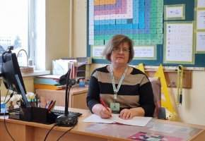

"Vienu gan varu teikt — mēs esam vispacietīgākie un radošākie, jo nemitīgi, jau kuro gadu, gaidām skolas renovāciju."
Siguldas pilsētas vidusskolā strādā kopš 2011.gada
Intervētājs Kristers Vikmanis
Kā Jūs jūtaties šajā saulainajā dienā?
Es jūtos brīnišķīgi, jo pavasaris man vienmēr ir bijis mīļākais gadalaiks. Tad, kad atgriežas gaisma un saule, visa pasaule, teiksim, sāk atjēgties pēc tās pelēkās ziemas, un noskaņojums uzreiz ir daudz, daudz labāks.
Cik gadus Jūs strādājat SPV?
Zem šī skolas nosaukuma — SPV — no skolas pirmās dienas. Sanāk 15 gadi. Bet tieši šajā ēkā no 1984.gada, tā ir arī mana pirmā darba vieta.
Kādu priekšmetu pasniedzat? Kāpēc tieši šo priekšmetu?
Matemātika jau kopš bērnības ir bijis mans mīļākais priekšmets, bet sanāca tā, ka pēc Rīgas 1. ģimnāzijas (tolaik 1. vidusskolas) beigšanas matemātika un fizika bija pieriebušās ne pa jokam, un aizgāju studēt kaut ko diametrāli pretēju — defektoloģiju, logopēdiju, speciālo pedagoģiju. Liktenīgas sakritības dēļ pēc studijām nokļuvu Siguldā, un vienīgā vieta, kur varēju strādāt savā specialitātē, bija Siguldas 1. vidusskola V. Jēkabsona vadībā. Un tad, kad bija pirmā izdevība, es atkal atgriezos pie savas mīļās matemātikas.
Vai skolotāja karjera vienmēr bija profesija, par kuru sapņojāt?
Nē, nē, skolotāja profesija man galīgi nebija padomā... Bet skolotāji visos laikos ir trūkuši. Jēkabsona pierunāta, sāku strādāt kā skolotāja. Nebija nemaz tik briesmīgi. Iepatikās. Un tad jau nācās vēl pamācīties, lai varētu pasniegt dažādus sākumskolas mācību priekšmetus. Un pats jau izbaudīji... Tu jau mācījies pie manis pirmajā klasē!
Jā, mācījos un ļoti labi atceros! Mums skolotāji arī ir stāstījuši par skolotāja profesiju, un mēs vienmēr sakām, ka nekad ar to nenodarbotos, bet tieši kā Jūs stāstījāt — ir tikai jāpamēģina, un var iepatikties!
Tieši tā!
Kas ir viens no Jūsu spilgtākajiem momentiem, ko piedzīvojāt šajā skolā?
Es nevaru pateikt, kas varētu būt viens no spilgtākajiem... Katra diena ir pilna ar dažādiem izaicinājumiem. Un jebkurā gadījumā ir daudz pozitīvu mirkļu, kas ir palikuši atmiņā, un ir arī visādi kreņķīši, bet tā, ka viens spilgtākais... nevarētu teikt, ka tāds būtu.
Kas Jums skolā parasti liek pasmaidīt? (Skolēni, kolēģi utt.)
Kas man liek pasmaidīt mūsu skolā? — laikam jau vispirms superīgākie kolēģi — radoši, sirsnīgi, izpalīdzīgi, vienmēr gatavi atbalstīt un iedrošināt. Bieži gaidu garo starpbrīdi, kurā satiekamies un izrunājam gan kreņķus, gan priekus. Tikšanās ar kolēģiem man ir kā dopings turpmākajai darba dienai. Man gandarījumu sagādā skolēnu sasniegumi, "paldies" pēc novadītās stundas, mīļš apskāviens un smaids. Kā jau katrā skolā, arī mums ir delveri un sliņķīši, bet gan jau viņi pēc gadiem novērtēs skolotāju ieguldīto darbu un skolu.
Ja Jums būtu izvēle mainīt savu profesiju, vai Jūs to mainītu? Ja jā, tad uz kādu?
Tagad gan varu teikt, ka profesiju mainīt negribētu. Man patīk atrasties starp jauniem cilvēkiem, apgūt jaunākās tehnoloģijas. Man patīk, ka darbs ir dinamisks. Katra diena ir citādāka.
Salīdzinot ar citām skolām, kas ir īpašs mūsu skolā atšķirībā no citām?
Nesalīdzināšu mūsu skolu ar citām, jo neesmu citur strādājusi. Ai, vienu gan varu teikt — mēs esam vispacietīgākie un radošākie, jo nemitīgi, jau kuru gadu, gaidām skolas renovāciju.
Nu jau esam nonākuši līdz šīs dienas noslēdzošajam jautājumam... Kas ir viena atmiņa, kuru vienmēr atceraties no SPV skolas pieredzes?
Protams, ir patīkami, ka tevi atceras. Smaida, sveicina pa gabalu. Reiz kāda bijusī skolniece, vedot savu dēliņu uz skolu, pienāca un, smaidot, teica: "Skolotāj, Jūs man iemācījāt, ka "no rīta" raksta atsevišķi, nevis kopā!". Abas pasmējāmies. Tādi mazie atmiņu brīži silda.
SĀKUMS